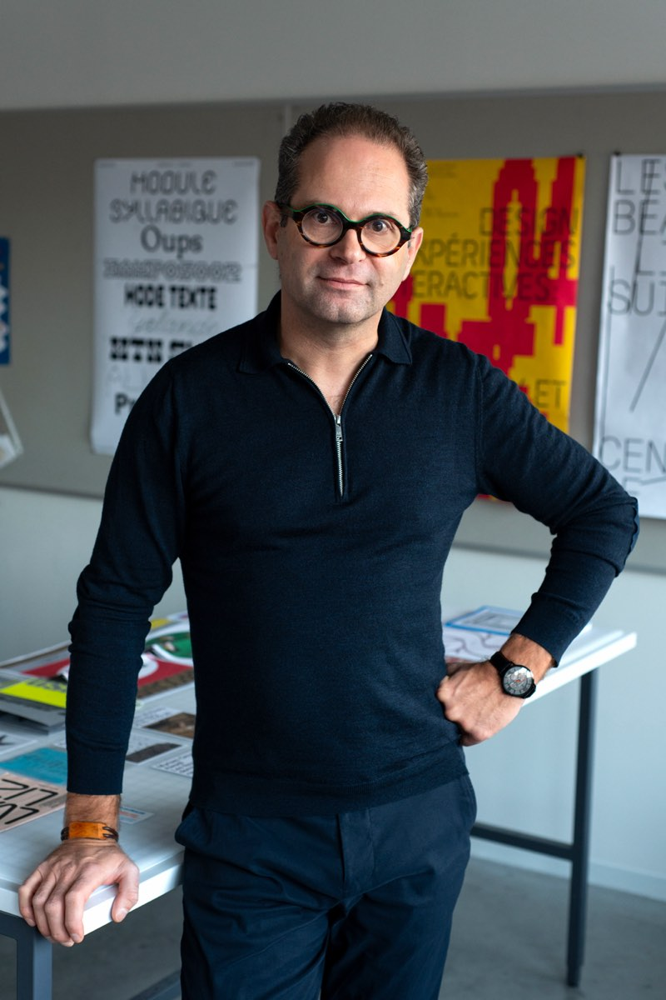

Petit lexique vivant de l'intelligence artificielle
Stéphane Vial · Préface de Marcello Vitali-Rosati · Parution le 6 octobre 2026
J'ai écrit un livre sur l'intelligence artificielle. Je l'ai écrit avec elle. Et je le dis, page 130.
Je n'ai pas seulement écrit ce livre avec l'IA. Je l'ai fabriqué et publié avec elle : la couverture, le code-barres, l'index, les prix, le dépôt. Un auteur seul a tenu une chaîne éditoriale complète.
Chaque page a été relue et commentée de façon critique par Marcello Vitali-Rosati, professeur titulaire à l'Université de Montréal, qui signe la préface.
Trois choses à lire
- La fabrique de ce livre
Le récit de fabrication publié dans l'ouvrage, pages 131 à 134. Comment ce livre a été pensé, écrit, vérifié, fabriqué et publié. - Déclaration sur l'usage de l'intelligence artificielle
Le texte signé, pages 129 et 130. « Je n'ai pas écrit ce livre malgré l'IA. Je l'ai écrit avec elle. » - Le livre
Quatre-vingt-onze notions en huit chapitres, dont huit à lire sur place.
Ce qu'est ce livre
Quatre-vingt-onze notions, une page chacune, en langage clair. Une définition, un exemple tiré du quotidien, et ce qui fait son importance.
L'auteur

Stéphane Vial est professeur titulaire à l'École de design de l'Université du Québec à Montréal. Docteur en philosophie, diplômé en psychologie clinique et chercheur en design, il enseigne notamment l'usage de l'intelligence artificielle dans la recherche, l'écriture et la création. Auteur de plusieurs livres, dont L'être et l'écran : comment le numérique change la perception, il explore la manière dont les technologies transforment nos façons de percevoir, de penser et d'agir.
Son site : stephane-vial.net
Sa position sur l’IA et l’écriture, publiée dans Le Devoir à l’été 2025 : ledevoir.com/opinion/idees/911919
Se procurer le livre
L'édition brochée et l'édition numérique paraissent le 6 octobre 2026. Les éditions anglaise et espagnole suivront le 17 novembre.
- France : amazon.fr/dp/B0HG5YBRPW
- Canada : amazon.ca/dp/B0HG5YBRPW
- États-Unis : amazon.com/dp/B0HG5YBRPW
L'ouvrage est également disponible sur les autres boutiques Amazon.
L'ouvrage
Petit lexique vivant de l'intelligence artificielle, Stéphane Vial
Préface de Marcello Vitali-Rosati
Stéphane Vial, éditeur · Montréal, Québec
ISBN 978-2-9825534-0-8 · dépôt légal BAnQ et Bibliothèque et Archives Canada
138 pages · broché et numérique · 6 octobre 2026
Comprendre l'intelligence artificielle ne dispense pas de penser. C'est la condition pour continuer à le faire.